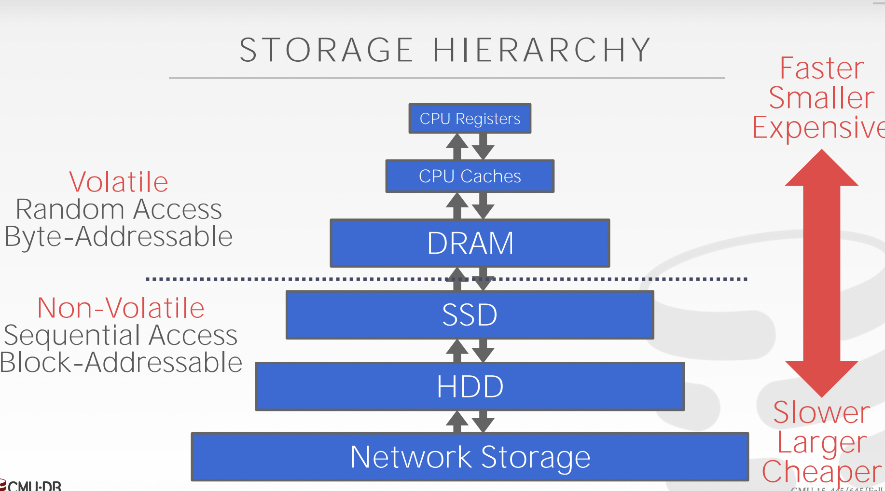
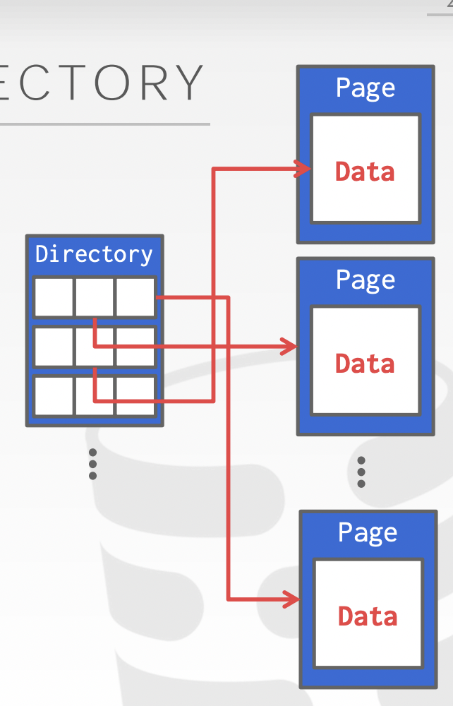
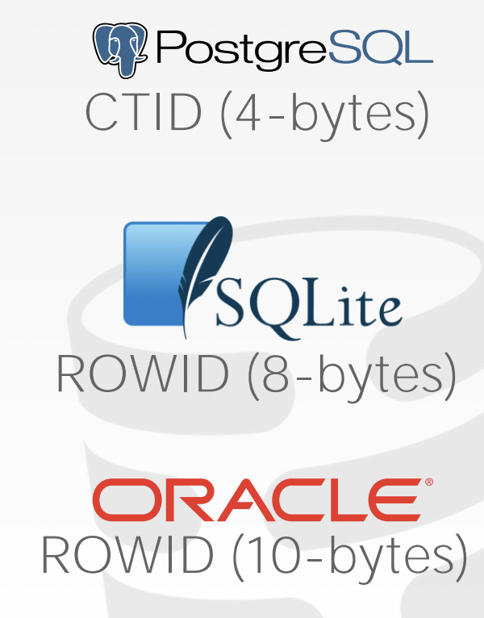

Database Storage
Disk-Oriented Architecture
计算机的物理存储可以按Volatile和Non-Volatile进行区分
Volatile:
- 断电后数据丢失–>不能保存持久化的数据
- 随机存取
- 字节寻址
Non-Volatile:
- 断电后数据不会丢失
- 顺序存取–>按照顺序进行存储
- 按照Block进行寻址
我们常用Memory（Volatile）和Disk（Non-volatile）来区分计算机的物理存储
课程中提到有Non-volatile Memory的存在，基于这种类型的存储或可构建出全新的DBMS
DB中的大量数据需要存储在Disk中，数据在Memory和Disk之间的移动会耗费大量的资源，DB需要精心设计存储结构保证读写操作的高效。
Why not os？
数据以文件的形式存储在磁盘中，一个文件中的每个页在被读取时需要被加载到内存中，即从虚拟内存加载到物理内存中。DB在设计时往往不使用OS自带的内存管理调用，如mmap，而是根据自己的需求设计合适的“disk-memory”数据交换策略。
在并发请求情况下，系统调用可以满足对于read请求的要求，但对于write请求而言，由于OS并不理解DB层面上的高级语义，从OS的视角来看，其仅仅只执行相应的读写指令，而并不知道这些指令对应的数据是什么样的，以及我们是怎样请求这些数据的。对于write请求，系统调用并不知道哪些page应该在另一些配置之前被刷到内存中。
DB可以做到更好的：
- Flushing dirty pages to disk in the correct order.
- Specialized prefetching.
- Buffer replacement policy.
- Thread/process scheduling.
数据在Disk中的存储形式
Problem #1: How the DBMS represents the database in files on disk.
File Storage
DB通过Storage Manager去管理其存储的File，一个File由多个Page组成，Storage Manager需要：
- 追踪对每一页上数据的读写
- 寻找空余的存储空间
每一个Page由唯一的标识符进行标记，表示固定大小的连续数据，Page存储的内容分为：tuples、logs、meta-data、indexes…一般一个page不会混合存储多种类型的数据（为了最大程度地从crash中恢复）
对于DB来说，Page有三种：
- Hardware Page(4KB)
- OS Page(4KB)
- DB Page(512B-16KB)
不同厂家对DB大小的设计不同，这是一种取舍，过小的Page容易导致目录页过大，从而使得cache没办法存储下目录页（类似CPU的TLB），而大的Page又会需要很多的额外操作来保证对一个Page的写入是原子的，计算机只能保证对一个Hardware Page(4KB)的写入是原子的，因此大于其大小的Page需要额外增加逻辑保证写入的原子性，也会在某种程度上降低性能。
DB中的文件用Heap File的形式进行存储
A heap file is an unordered collection of pages where tuples that are stored in random order.
Create / Get / Write / Delete Page
Must also support iterating over all pages.
Heap File有链表实现（不采用）/页目录实现两种实现方式
页目录实现：
Directory中包含Page的空闲信息，指针等内容
Page Layout
每个Page有Header和Data部分组成
Header中保存信息：
- checksum
- page size
- DBMS version
- transaction visibility
- compression information(gzip/etc..)
对于Page中保存数据即Tuples，一般可以有两种思路：
- 维护一个num tuples，每次将新的tuple添加到最后（不适用删除场景，并且tuple的长度也是固定的）
- 从前向后维护slots，从后向前存储数据，slots中存储tuple的首地址（tuple长度可变）
- 在这种情况下header只需保存已用的slots信息以及最后一个已用的slot的首地址
Tuple Layout
tuple由一串连续的bytes组成，根据schema中属性的长度，解析出tuple中每个属性的值，schema中的meta-data也无需存储在tuple中
tuple=header+data，其header部分主要存储：
- visibility info (for concurrency control)
- bitmap for null values
对于一个tuple，其id可以用pageid+slotsid进行表示，不同的DB有不同的实现方式
denormalize tuple data：
一般不同table的tuples都存储在不同的page上，而当遇到比如join操作时，数据库会将不同table的tuple在物理存储上连接到一起，以优化后续操作的性能
Log Structured File
除了将tuple直接存储在page中，一些DB直接以log的形式存储在page中。
优点：更新、删除、插入语句均只需要在log文件末尾以append的形式写入，连续写入的效率更高
缺点：查询语句性能较低
Tuple数据的存储细节
A tuple is essentially a sequence of bytes. It’s the job of the DBMS to interpret those bytes into attribute types and values.
arbitrary precision numbers & fixed precision numbers
任意精度的数字：系统内置，计算速度快，有舍入误差
固定精度数字：计算精确，手动实现，计算效率低

Large Values
大部分DBMS不允许数据大小超过1个Page的大小
overflow page:
部分DBMS使用overflow page存储Large Value
→ Postgres: TOAST (>2KB)
→ MySQL: Overflow (>½ size of page)
→ SQL Server: Overflow (>size of page)
BLOB File
对于更大的数据将其存储在外置文件中，称其为BLOB文件
缺点在于没有持久性和事务的保护
System Catalogs
You can query the DBMS’s internal INFORMATION_SCHEMA catalog to get info about the database.
通过其可以获得table的基本信息，以及tuple的布局，因为tuple内部属性不一定会按照创建语句中的排列顺序进行存储
两种类型的数据库 OLTP & OLAP
On-line Transaction Processing
- 对小部分数据频繁地读写操作
- 频繁地事务操作
On-line Analytical Processing
- 较少的写入操作
- 复杂的数据分析逻辑

行存储与列存储
由OLTP和OLAP的区别从而导致对于table数据存储形式的区别
行存储：数据按行依次存储，对于一次性对数据的所有属性进行操作的行为更加友好，缺点在于对于按特定属性进行查询，分析时性能较差
列存储：数据按照不同属性（列）依次存储，可以快速读取多条记录的相同属性